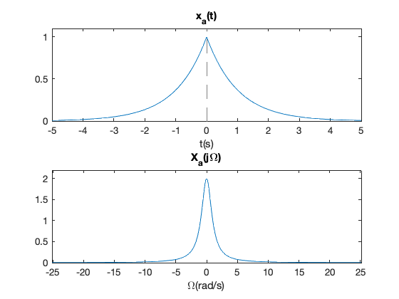
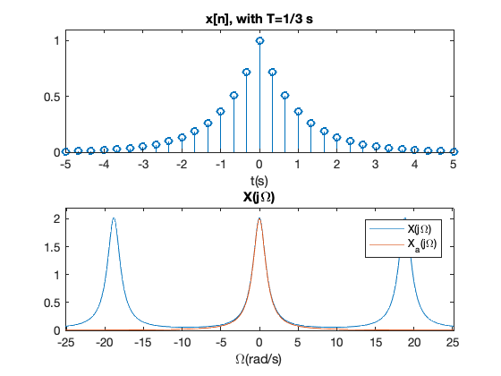
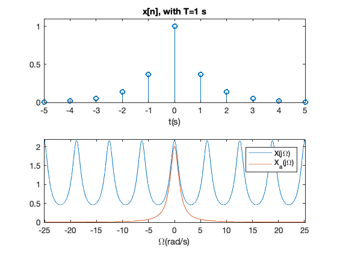
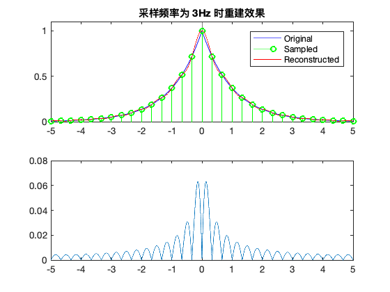
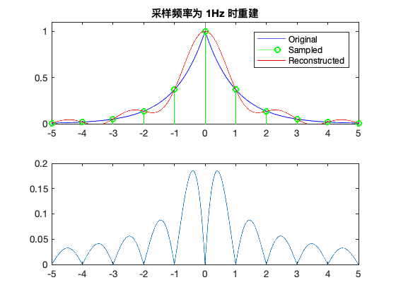
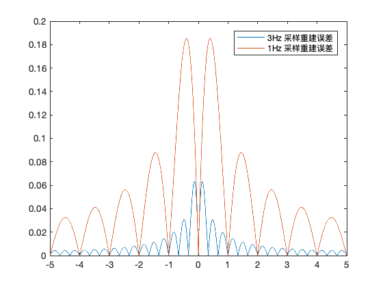

3.3. 非带限信号的采样与重建¶
考虑如下的连续时间双边指数信号
\[x_a(t) = e^{-A|t|} \longleftrightarrow X_a(j\Omega) = \frac{2A}{A^2 + (\Omega)^2}\]
求采样信号\(x[n]=x_a(nT)\)的频谱；
画出\(T=1/3\)s和\(T=1\)s 的信号\(x_a(t)\)和\(x[n]\)的波形及其频谱图；
画出用理想带限插值方法重建后的连续时间信号\(�\hat x_a(t)\)的波形;
分析采样信号频谱¶
如果以采样频率\(1/T\)采样，得到
\[x[n]=x_{a}(n T)=\mathrm{e}^{-A T|n|}\]
直接计算离散时间傅里叶变换，那么就很容易得到\(x[n]\)的频谱
\[X(j\Omega)=\frac{1-a^{2}}{1-2 a \cos \left(\Omega T\right)+a^{2}}, \quad a = \mathrm{e}^{-A T}\]
显然，\(X(j�\Omega)\)是周期函数。
画出频谱图¶
[1]:
% 模拟信号 x_a(t)
A = 1;
subplot(211)
fplot(@(t)(exp(-A*abs(t))))
axis([-5,5,0,1.1])
title('x_a(t)')
xlabel('t(s)')
subplot(212)
fplot(@(w)(2*A./(A.^2+w.^2)),[-8*pi 8*pi])
axis([-8*pi 8*pi,0,2.2])
title('X_a(j\Omega)')
xlabel('\Omega(rad/s)')

[2]:
% t=1/3s 时，采样信号频谱
A = 1;
T = 1/3;
a = exp(-A*T);
t = -5:T:5;
xn = exp(-A*abs(t));
subplot(211)
stem(t,xn,'o')
axis([-5,5,0,1.1])
title('x[n], with T=1/3 s')
xlabel('t(s)')
subplot(212);hold on; box on
fplot(@(w)(T*(1-a^2)./(1-2*a*cos(w*T)+a^2)),[-8*pi 8*pi])
fplot(@(w)(2*A./(A.^2+w.^2)),[-8*pi 8*pi])
axis([-8*pi 8*pi,0,2.2])
title('X(j\Omega)')
xlabel('\Omega(rad/s)')
legend('X(j\Omega)','X_a(j\Omega)')

[3]:
% t=1/3s 时，采样信号频谱
A = 1;
T = 1;
a = exp(-A*T);
t = -5:T:5;
xn = exp(-A*abs(t));
subplot(211)
stem(t,xn,'o')
axis([-5,5,0,1.1])
title('x[n], with T=1 s')
xlabel('t(s)')
subplot(212),hold on
fplot(@(w)(T*(1-a^2)./(1-2*a*cos(w*T)+a^2)),[-8*pi 8*pi])
fplot(@(w)(2*A./(A.^2+w.^2)),[-8*pi 8*pi])
box on
axis([-8*pi 8*pi,0,2.2])
% title('X(j\Omega)')
xlabel('\Omega(rad/s)')
legend('X(j\Omega)','X_a(j\Omega)')

理想带限插值方法重建¶
当采样频率为 3 Hz 时
[4]:
A = 1;
T = 1/3;
a = exp(-A*T);
tn = -5:T:5;
xn = exp(-A*abs(tn));
xahat = 0;
t = -5:0.001:5;
sinc = @(t,n) (sin(pi/T*(t-n*T))/(pi/T)./(t-n*T));
for i = 1:length(xn)
xahat = xahat + xn(i)*sinc(t,round(tn(i)/T));
end
subplot(211)
xat = @(t)(exp(-A*abs(t)));
fplot(xat,'b')
hold on;
stem(tn,xn,'go')
plot(t,xahat,'r')
axis([-5,5,0,1.1])
legend('Original','Sampled','Reconstructed')
title('采样频率为 3Hz 时重建效果')
subplot(212)
error1 = abs(xat(t) - xahat);
plot(t, error1);

当采样频率为 1 Hz 时
[5]:
A = 1;
T = 1;
a = exp(-A*T);
tn = -5:T:5;
xn = exp(-A*abs(tn));
xahat = 0;
t = -5:0.001:5;
sinc = @(t,n) (sin(pi/T*(t-n*T))/(pi/T)./(t-n*T));
for i = 1:length(xn)
xahat = xahat + xn(i)*sinc(t,round(tn(i)/T));
end
subplot(211)
xat = @(t)(exp(-A*abs(t)));
fplot(xat,'b')
hold on;
stem(tn,xn,'go')
plot(t,xahat,'r')
axis([-5,5,0,1.1])
legend('Original','Sampled','Reconstructed')
title('采样频率为 1Hz 时重建')
subplot(212)
error2 = abs(xat(t) - xahat);
plot(t, error2);

[6]:
% Compare errors
plot(t,error1,t,error2)
legend('3Hz 采样重建误差','1Hz 采样重建误差')

Note: 对于非带限信号来说，采样频率越高，重建误差越小。